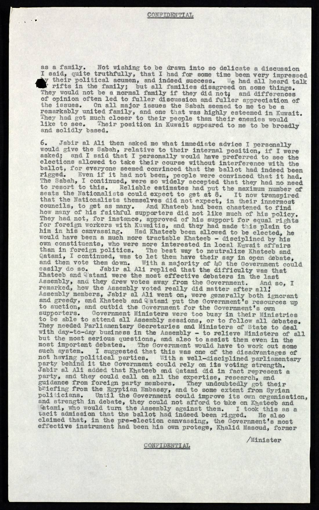
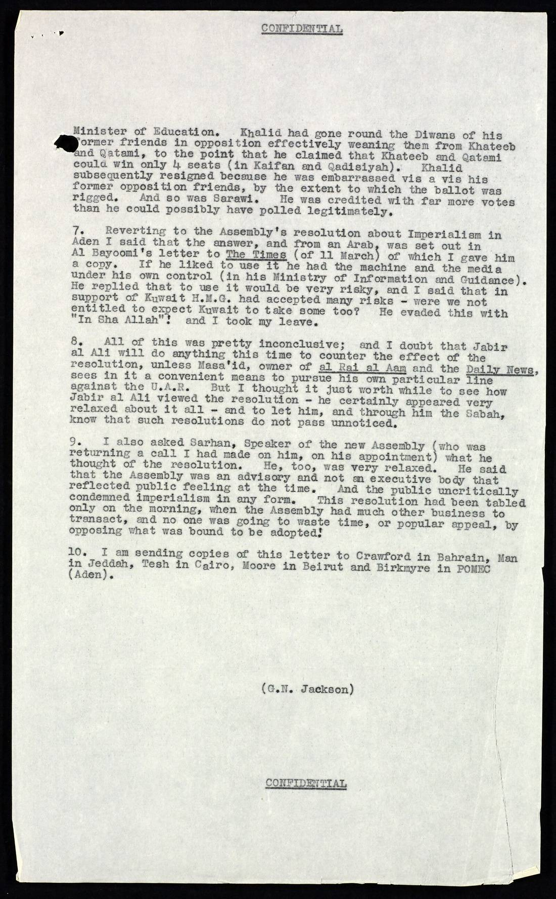
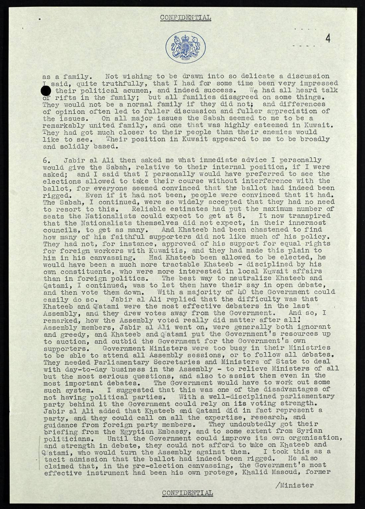
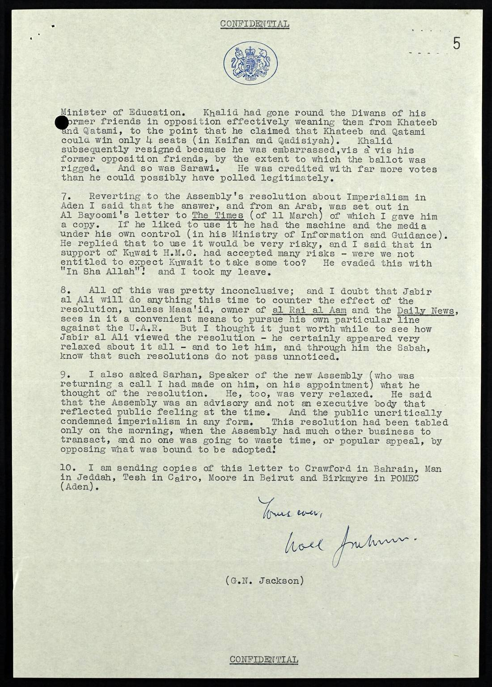

Sheikh Jaber Al-Ali tells the Ambassador that Khateeb and Qatami were the most effective debaters in the last Assembly and drew votes away from the Government. The Ambassador takes his words as a quiet admission that the 1967 ballot was rigged.
Why it matters
A senior Sheikh's own view, as recorded by the British, of why Jassim was kept out of the 1967 Assembly.
Who is meant
The same Jassim Al-Qatami as the records that give his full name: Director of Police, resigned at Suez, later a nationalist member of the National Assembly.
Page copies

FCO 8/354, p. 13

FCO 8/354, p. 14

FCO 8/629, p. 5

FCO 8/629, p. 6
Original text
The best way to neutralize Khateeb and Qatami, I continued, was to let them have their say in open debate, and then vote them down. With a majority of 40 the Government could easily do so. Jabir al Ali replied that the difficulty was that Khateeb and Qatami were the most effective debaters in the last Assembly, and they drew votes away from the Government. … Jabir al Ali added that Khateeb and Qatami did in fact represent a party, and they could call on all the expertise, research, and guidance from foreign party members. … Until the Government could improve its own organisation, and strength in debate, they could not afford to take on Khateeb and Qatami, who would turn the Assembly against them. I took this as a tacit admission that the ballot had indeed been rigged.
… Khalid had gone round the Diwans of his former friends in opposition effectively weaning them from Khateeb and Qatami, to the point that he claimed that Khateeb and Qatami could win only 4 seats (in Kaifan and Qadisiyah).
English translation
وتابعتُ قائلا إن أفضل طريقة لتحييد الخطيب والقطامي هي أن يُتاح لهما قول ما لديهما في نقاش علني ثم التصويت ضدهما، وبأغلبية أربعين يمكن للحكومة أن تفعل ذلك بسهولة. فردّ جابر العلي بأن المشكلة أن الخطيب والقطامي كانا أكثر المتحاورين تأثيرا في المجلس السابق، وكانا يجذبان الأصوات بعيدا عن الحكومة. … وأضاف جابر العلي أن الخطيب والقطامي يمثلان حزبا في الواقع، ويستطيعان الاستعانة بكل الخبرة والبحث والتوجيه من أعضاء الحزب في الخارج. … وإلى أن تحسّن الحكومة تنظيمها وقوتها في النقاش، فلا يمكنها أن تواجه الخطيب والقطامي اللذين سيقلبان المجلس عليها. وفهمتُ من ذلك اعترافا ضمنيا بأن الاقتراع قد زُوّر فعلا.
… وكان خالد قد طاف على دواوين أصدقائه السابقين في المعارضة وأبعدهم فعليا عن الخطيب والقطامي، حتى زعم أن الخطيب والقطامي لن يفوزا إلا بأربعة مقاعد (في كيفان والقادسية).
Others named
Dr Ahmad Al-KhatibSheikh Jaber Al-Ali Al-SabahKhalid Al-Masoud
Sources
The National Archives, London, digitised by the Arabian Gulf Digital Archive (agda.ae). Images reproduced by permission of The National Archives, London, England.
Archive reference
FCO 8/354 · Kuwait
FCO 8/629 · South Arabia
How this text was made: Typed from the archive's own text reading of the scan, corrected against the scan where the reading was garbled. … marks text left out. Arabic translation by Claude; please review.